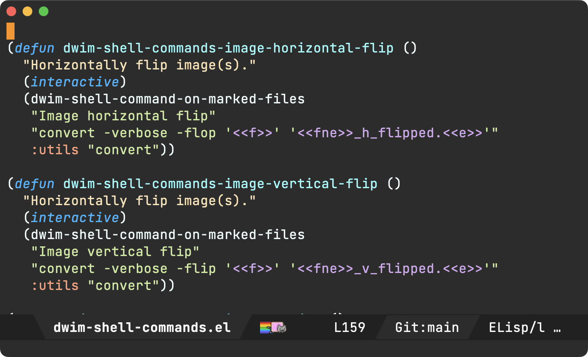
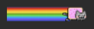
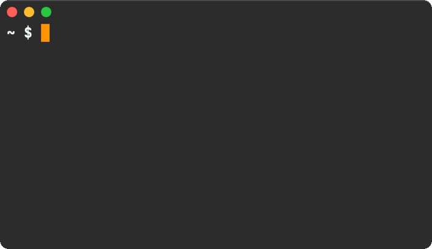
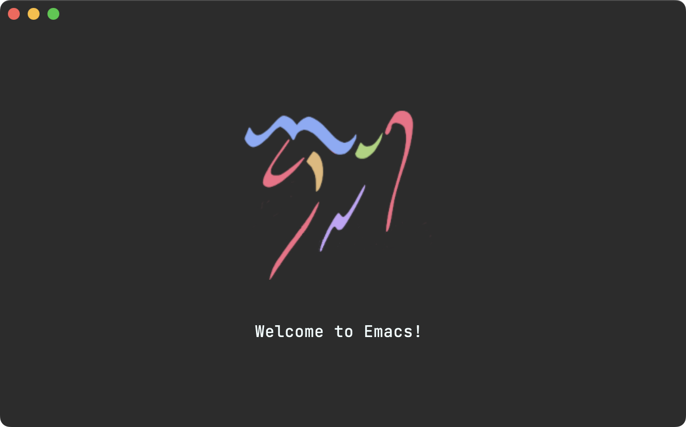
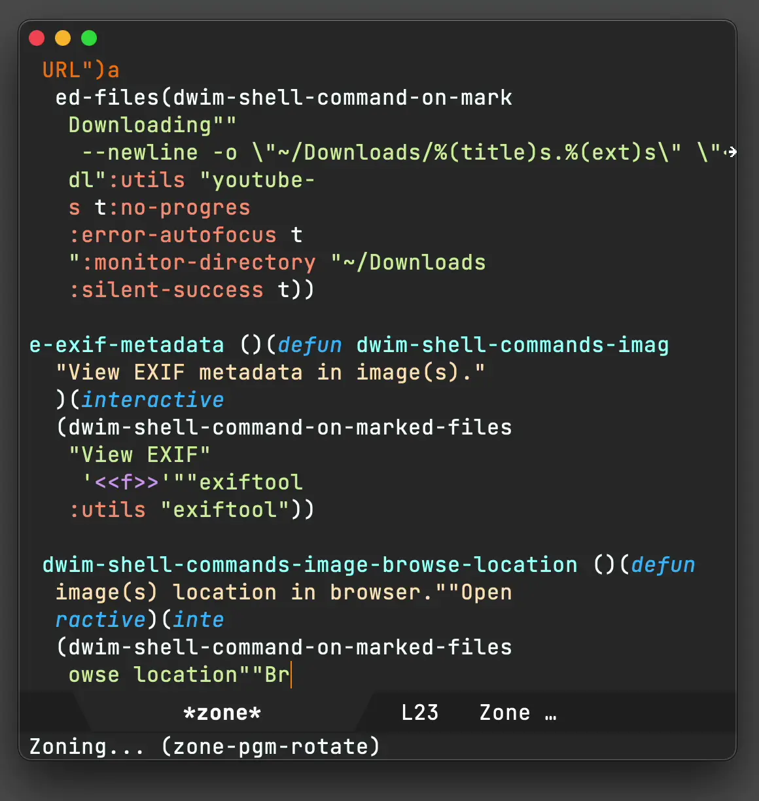
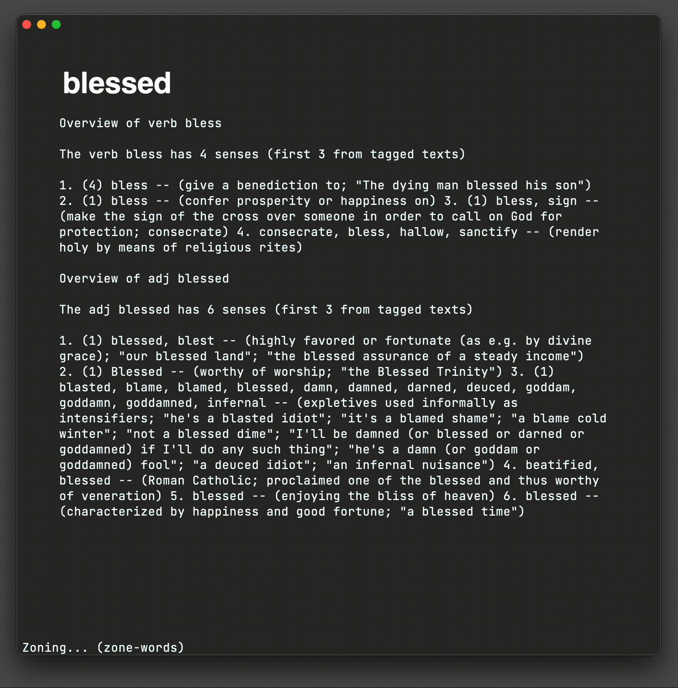

Álvaro Ramírez
My Emacs eye candy
I get the occasional question about my Emacs theme, font, and other eye candy. I'm always tickled and happy to share.

It's been a while since I've made visually significant changes to my Emacs config. May as well briefly document for posterity…
Nyan Mode
First things first. The adorable and colorful little fella in my mode line is a Nyan Cat (if you dare, check the meme video). Yes, I know it's sooo 2011, but it's 2023 and I still love the little guy hanging out in my Emacs mode line. I still get asked about it.

This fabulous feature comes to us via the great Nyan Mode package. If looks haven't convinced you, Nyan also packs scrolling functionality. Click anywhere in it.
Oh, and if you can't get enough of Nyan, there's also zone-nyan for Emacs.
Emacs Plus (macOS)
I should mention I'm running Emacs 28 on macOS via the excellent Emacs Plus homebrew recipe. These are all the options I enable.
brew install emacs-plus@28 --with-imagemagick --with-no-frame-refocus --with-native-comp --with-savchenkovaleriy-big-sur-icon
Icon
Since we're talking eye candy, let's chat about --with-savchenkovaleriy-big-sur-icon. This Emacs Plus option enables Valeriy Savchenko's wonderful icon.

Titlebar
I've enabled both transparent title bar as well as dark appearance, giving a minimal window decoration.

(add-to-list 'default-frame-alist '(ns-transparent-titlebar . t)) (add-to-list 'default-frame-alist '(ns-appearance . dark))
Note: both of these variables are prefixed ns- (macOS-only settings).
Font (JetBrains Mono)
I've been on JetBrains Mono font for quite some time now. In the past, I've also been a fan of Mononoki and Menlo (on macOS) or Meslo (similar elsewhere).
Theme (Material)
I'm using the great Material Theme for Emacs, with a bunch of tweaks of my own.
Modeline tabs/ribbons (Moody)
The moody package adds a nice touch displaying mode line elements as tabs and ribbons.
Modeline menus (Minions)
The minions package removes lots of minor mode clutter from the mode line and stashes it away in menus.
Hiding modeline (hide mode line mode)
Hiding the mode line isn't something I use in most major modes. However, I found it complements my shell (eshell) quite well. While I was sceptical at first, once I hid the mode line in my shell I never looked back. I just didn't miss it. I also love the uncluttered clean vibe. hide-mode-line-mode can help with that.

Welcome screen
Back in October 2022, I experimented with adding a minimal welcome screen. I was initially hesitant, as I was already a fan of the welcome scratch buffer. In any case, I figured I'd eventually get tired of it and remove it. Well, it's enabled in my config still ;) My initial attachment to a landing scratch quickly faded. I'm only a C-x b binding away from invoking ivy-switch-buffer to get me anywhere.

The great Emacs logo originally shared by u/pearcidar43.
Zones
I've been meaning to re-enable zones in my config. They always gave me a good tickle. I've already mentioned zone-nyan, but if you're new to zones, they kick off after a period of inactivity (similar to a screensaver).
Here's zone-pgm-rotate in all its glory. Oh and it's built-in!

Coincidentally, I had a go at writing a basic zone a little while ago.

Config
Most of the items mentioned I pulled from my Emacs config's fe-ui.el. There's more there if you're interested.
What is some of your favorite Emacs eye candy? reddit / mastodon / twitter.